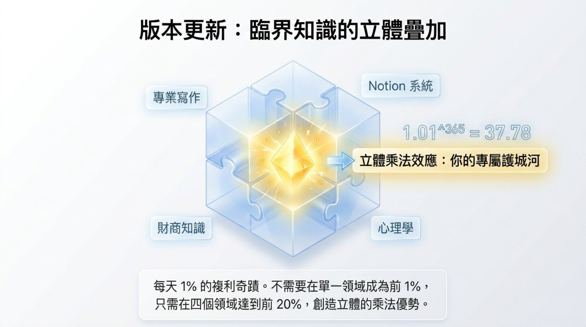
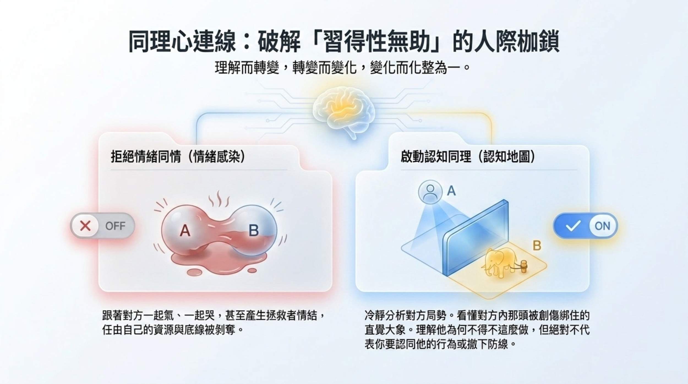

Module 1 / 人生複利
信念校準
願望不清楚，努力就會到處漏電。
這個模組把願望從「我想要更好」拆成清楚關鍵字。你會用 RAS 搜尋引擎、黃金圈追問與微行動確認鍵，把模糊願望轉成今天就能做的一小步。
- RAS 關鍵字改寫
- 三次為什麼願望校準
- 2 分鐘微行動確認鍵
Life OS Course / 三書課程模組
這不是把書摘貼成課程，而是把《人生複利》《人生遊戲》《降噪人生》整理成三個模組：先校準願望，再除錯逆境，最後建立自己的 Life OS。
Module 1 / 人生複利
這個模組把願望從「我想要更好」拆成清楚關鍵字。你會用 RAS 搜尋引擎、黃金圈追問與微行動確認鍵，把模糊願望轉成今天就能做的一小步。

Module 2 / 人生遊戲
很多痛苦不是事件本身，而是大腦追加的劇情。這個模組教你用攝影機思維、玩家視角與條件溝通，把逆境重新拆成可以處理的任務。

Module 3 / 降噪人生
當願望與逆境都被整理後，最後要把人生雜訊移出大腦。這個模組建立第二大腦、能量審計與心靈 NAS，讓你有一套可維護的生活系統。

課程路徑
如果一開始就做第二大腦，很容易變成更漂亮的待辦清單；如果只談轉念，又可能沒有落地工具。Life OS 的順序是：先知道自己要去哪，再處理卡關劇情，最後建立每天會自動維護的生活作業系統。
免費預覽 / Day 1
Day 1 不要求你立刻變自律，只要求你先把大腦從硬碟模式切回處理器模式。這一頁會出現在工作本中，讓你體驗完整格式。
哈囉，我是白熊。大腦是用來思考，而非死記的硬碟。瑣事塞滿腦海只會讓記憶體發燙。今天請將腦中雜事毫無保留寫下，徹底卸載焦慮。
Day 1-21
公開頁只展示課程結構；完整填寫頁、作者旁白與 PDF 美化版會放在 21 天工作本中。
適合誰 / 不適合誰
Life OS 課程模組適合已經知道自己需要改變，但一直缺少穩定流程的人；如果你只想看更多觀念，這套練習反而會顯得太實作。
你有很多待辦、靈感、焦慮和責任卡在腦中，常常覺得自己不是不努力，而是系統過熱。
你不缺知識，缺的是把信念、情緒、任務和界線每天整理一次的固定儀式。
這套工作本需要每天寫下答案。只看不做，效果會停在「有道理」，不會變成生活系統。